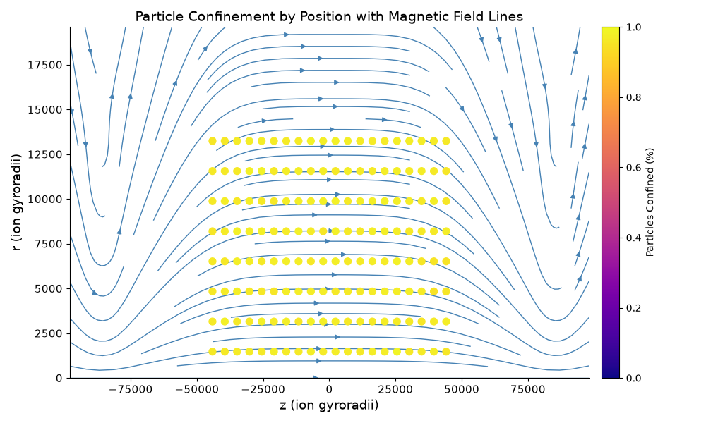
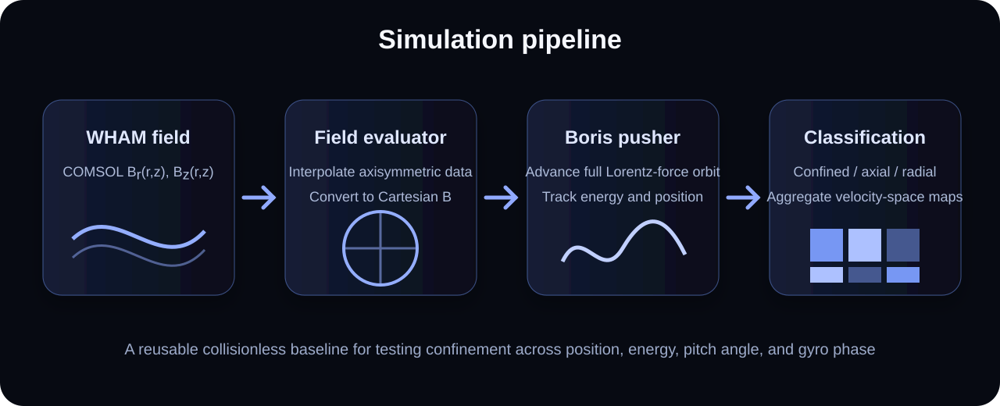
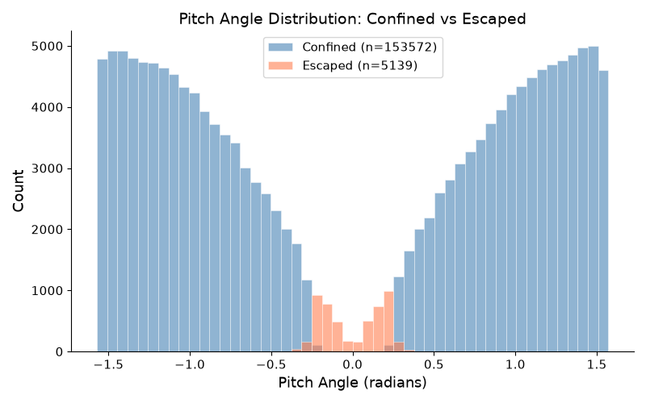
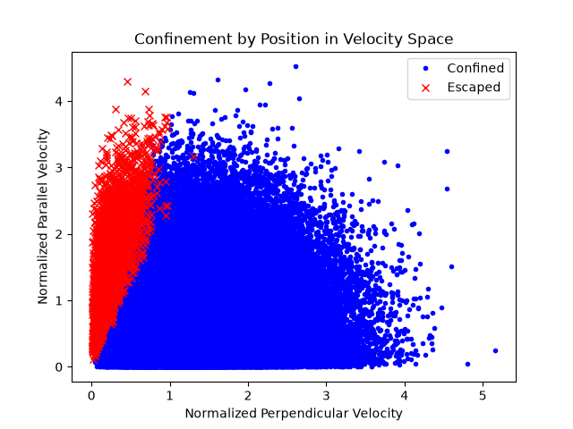
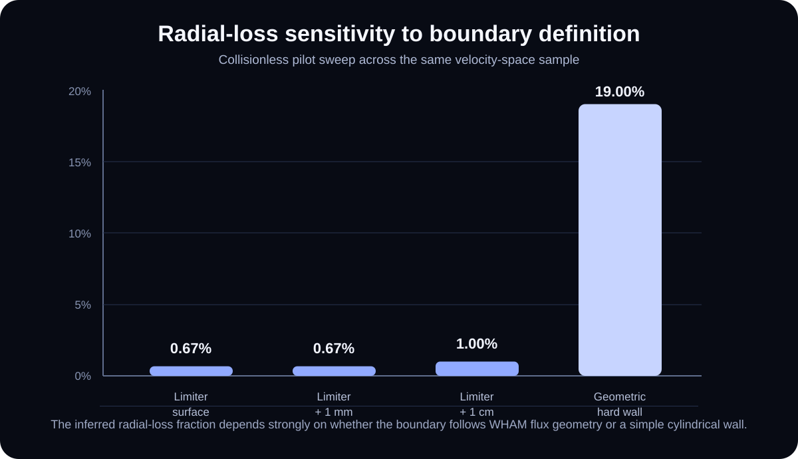
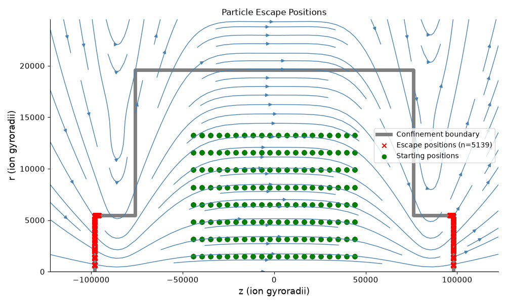
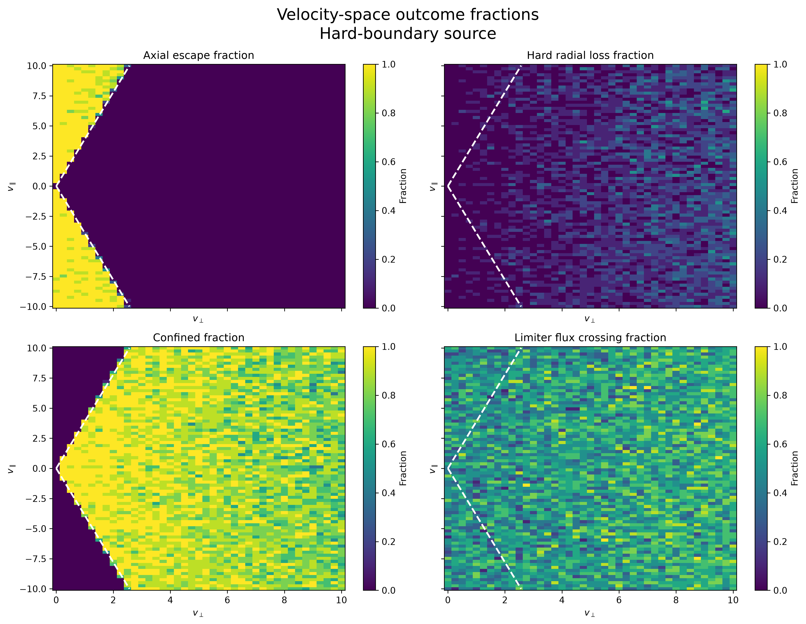
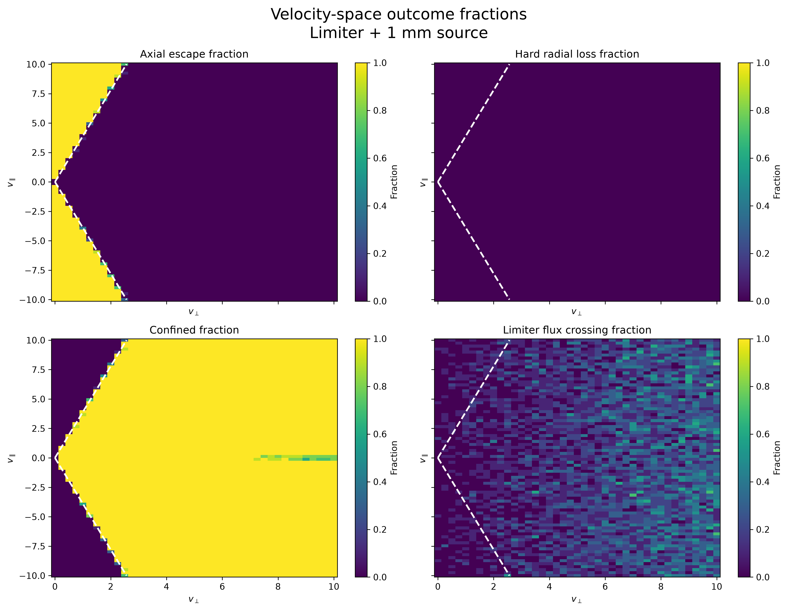
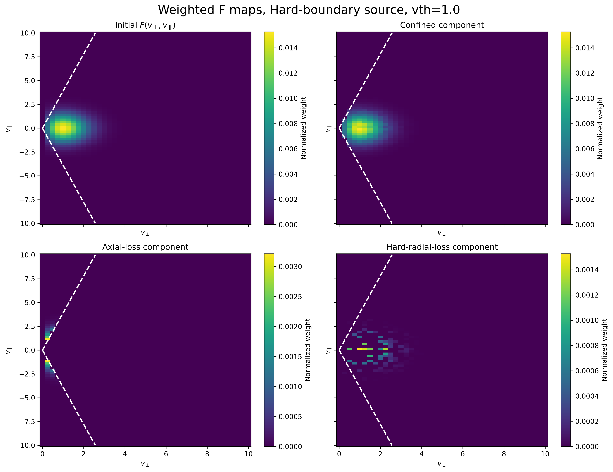
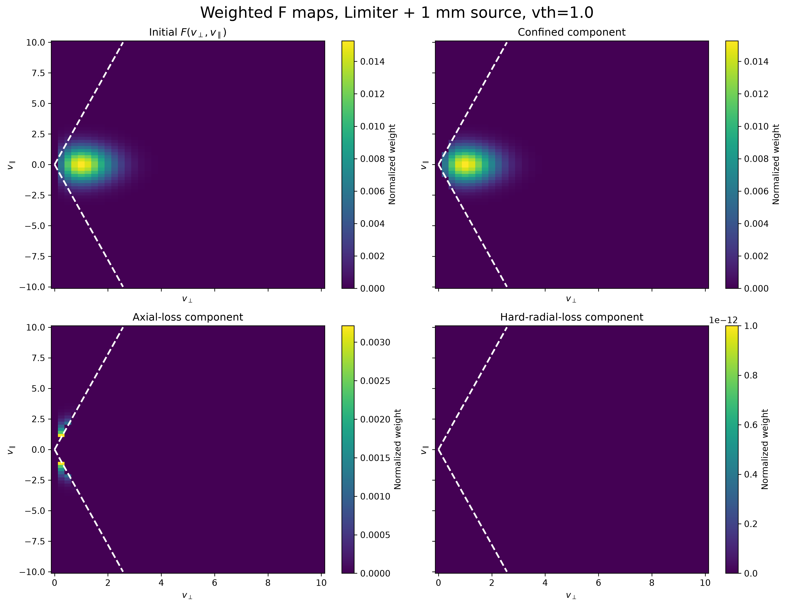

Computational Plasma Physics
Fast-Ion Orbit Modeling in WHAM Fields
Summer 2026 • Ongoing research
I am developing a full-orbit simulation pipeline in Python that evaluates energetic ion motion in actual WHAM magnetic-field data and classifies confinement, axial escape, and radial loss across position and velocity space. I parallelized the independent orbit calculations and moved the largest production sweeps to Firebird, Swarthmore's high-performance computing cluster.
Field interpolation, orbit integration, classifier design, validation, analysis, and visualization.
Full particle trajectories in axisymmetric Br(r,z) and Bz(r,z) fields exported from COMSOL.
More than 100,000 full-orbit integrations across high-resolution spatial and velocity-space studies.
Boris particle pusher, field interpolation, distributed parameter sweeps, weighted distributions, and plotting.
Which energetic ions remain confined?
WHAM uses a magnetic-mirror geometry to confine plasma between regions of stronger magnetic field. Particles moving primarily along the field can stream through the mirrors, while particles with sufficient perpendicular velocity reflect and remain trapped. At higher energy, finite gyro-orbit size and the device geometry also open possible radial-loss pathways.
To answer this beyond a handful of individual trajectories, I built a reusable framework that samples initial position, velocity, and gyro phase. Each particle is then classified as confined, axially escaped, past a limiter-related flux surface, or across a harder fast-ion radial boundary.
The animation is a conceptual representation of a particle trapped between two magnetic-mirror regions. It is included to make the confinement mechanism intuitive, but it is not generated from the imported WHAM field. The quantitative results below come from the separate full-orbit model using actual WHAM magnetic-field data and are applied across large populations to address questions our collaborators care about, including energetic deuterium confinement and the eventual calculation of charge-exchange losses.

From COMSOL fields to orbit classification
The field evaluator loads WHAM's axisymmetric radial and axial magnetic-field components, interpolates them at each particle location, and converts the result into Cartesian coordinates. A Boris pusher advances the full gyromotion under the Lorentz force while tracking position, velocity, energy, mirror bounces, and boundary crossings.
The same orbit engine is reused across position scans, pitch-angle studies, velocity-space sweeps, and weighted distribution calculations. I structured the workflow so the independent trajectories could be distributed in parallel without changing the underlying physical model, allowing conclusions to be tested across large populations rather than a few visually appealing trajectories.

Field evaluation
Interpolate Br and Bz on the WHAM grid and recover the Cartesian field at arbitrary particle positions.
Orbit integration
Advance full particle gyromotion with the Boris algorithm rather than relying only on a guiding-center approximation.
Classification
Separate confined particles from axial escape, hard radial loss, limiter-surface crossing, and unresolved cases.
Population analysis
Repeat across v⊥, v∥, position, and gyro phase, then weight the outcomes with a physical source distribution.
Scaling from single orbits to production sweeps
A single trajectory is useful for debugging and visualization, but the questions we care about depend on how confinement changes across an entire population. Because the particle integrations are independent, I parallelized the workflow and ran the largest parameter sweeps on Firebird, Swarthmore's high-performance computing cluster. I then combined the batch outputs into outcome maps and weighted distributions.
The current production studies include a 41,310-orbit spatial birth-location scan (81 axial positions × 51 radial positions × 10 samples) and 65,600 velocity-space integrations across two boundary/source cases. Between those two studies alone, the model has completed more than 100,000 full-orbit integrations using the actual WHAM field geometry.
High-resolution sampling across axial and radial birth location, with 10 samples at each grid point.
Two 41 × 80 velocity grids with 10 samples per bin, used to compare source and radial-boundary definitions.
Parallel production runs turned the orbit engine into a population-level simulation tool.
Building a trustworthy baseline
Before interpreting large parameter scans, I checked the integrator against the expected magnetic-mirror loss cone and repeated runs with smaller timesteps and longer durations. Escaped particles concentrate near field-aligned motion, while the trapped/passing boundary follows the theoretical mirror trend.
Energy is conserved to approximately one part in 1013 in the validated collisionless runs. This matters because small numerical heating or cooling can shift a loss boundary over a long integration and create a physically plausible but numerically false result.
Maximum fractional energy error in the current validated collisionless runs.
Current pilot sweeps, consistent with the expected magnetic-mirror loss cone.
The classifier resolves a population rather than a single representative orbit.


The radial boundary changes the conclusion
One of the most important results so far was a modeling lesson rather than a single percentage: radial loss is highly sensitive to how the physical device boundary is represented. A simple cylindrical hard wall classified 19% of a pilot population as radially lost. When the boundary was tied to the relevant WHAM limiter flux surface, the inferred loss fell below 1% in the same sweep.
A geometric radius can count a finite gyro-orbit excursion as a true loss even when the guiding trajectory remains associated with the confined region. The classifier therefore records limiter crossing and hard radial loss separately instead of collapsing every radial excursion into one outcome.

View the detailed boundary and velocity-space figures



The figures can be opened at full resolution for axis labels and individual velocity-space bins.
From equally weighted scans to physical populations
A raw classifier answers what happens to each sampled initial condition, but not how much that condition contributes to a physical population. I therefore map the outcomes onto normalized F(v⊥,v∥) distributions, weighting the confined and lost components by the source rather than treating every velocity bin equally. These maps show the loss cone, confined core, and lower-weight radial-loss regions in the same coordinate system, while providing a baseline for adding collisions.


Adding the next layer of physics
The current workflow provides a validated collisionless baseline for confined, axially lost, radially lost, and limiter-crossing populations. The next step is to introduce collisions so pitch-angle scattering can repopulate the loss cone over time, then extend the model toward the 20–25 keV deuterium ions produced by WHAM's neutral-beam system.
Near term
- Validate pitch-angle scattering and collision timescales
- Finalize weighted F(v⊥,v∥) evolution
- Compare limiter and fast-ion flux boundaries
Longer term
- Model energetic neutral-beam deuterium
- Calculate charge-exchange loss directions and magnitudes
- Evaluate electric-field and Pastukhov-potential effects